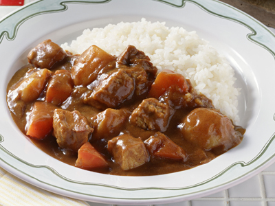

Our Menus

Okonomiyaki
Okonomiyaki (お好み焼き, o-konomi-yaki) is a Japanese savory pancake containing a variety of ingredients in a wheat-flour-based batter; it is an example of konamon (flour-based Japanese cuisine). The name is derived from the word okonomi, meaning "how you like" or "what you like", and yaki meaning "cooked" (usually fried). Okonomiyaki is mainly associated with the Kansai or Hiroshima areas of Japan, but is widely available throughout the country. Toppings and batters tend to vary according to region. In Tokyo, there is a semi-liquid okonomiyaki called monjayaki.
Price: IDR

Onigiri
O-nigiri (お握り or 御握り; おにぎり), also known as o-musubi (お結び; おむすび), nigirimeshi (握り飯; にぎりめし), rice ball, is a Japanese food made from white rice formed into triangular or cylindrical shapes and often wrapped in nori (seaweed). Traditionally, an onigiri is filled with pickled ume (umeboshi), salted salmon, katsuobushi, kombu, tarako, or any other salty or sour ingredient as a natural preservative. Most Japanese convenience stores stock their onigiri with various fillings and flavors. There are even specialized shops which only sell onigiri to take out. Due to the popularity of this trend in Japan, onigiri has become a popular staple in Japanese restaurants worldwide.
Price: IDR
Ramen
Ramen (拉麺, ラーメン, rāmen, IPA: [ɾaꜜːmeɴ]) is a Japanese noodle soup. It consists of Chinese wheat noodles served in a meat or (occasionally) fish-based broth, often flavored with soy sauce or miso, and uses toppings such as sliced pork (叉焼, chāshū), nori (dried seaweed), menma, and scallions. Nearly every region in Japan has its own variation of ramen, such as the tonkotsu (pork bone broth) ramen of Kyushu and the miso ramen of Hokkaido. Mazemen is the name of a ramen dish that is not served in a soup, but rather with a sauce (such as tare), like noodles that are served with a sweet and sour sauce.
Price: IDR
Sukiyaki
Sukiyaki (鋤焼, or more commonly すき焼き; [sɯ̥kijaki]) is a Japanese dish that is prepared and served in the nabemono (Japanese hot pot) style. It consists of meat (usually thinly sliced beef) which is slowly cooked or simmered at the table, alongside vegetables and other ingredients, in a shallow iron pot in a mixture of soy sauce, sugar, and mirin. The ingredients are usually dipped in a small bowl of raw, beaten eggs after being cooked in the pot, and then eaten. Generally sukiyaki is a winter dish and it is commonly found at bōnenkai, Japanese year-end parties.
Price: IDR

Sushi
Sushi (すし, 寿司, 鮨, pronounced [sɯɕiꜜ] or [sɯꜜɕi]) is a Japanese dish of prepared vinegared rice (鮨飯, sushi-meshi), usually with some sugar and salt, accompanying a variety of ingredients (ネタ, neta), such as seafood, vegetables, and occasionally tropical fruits. Styles of sushi and its presentation vary widely, but the one key ingredient is "sushi rice", also referred to as shari (しゃり), or sumeshi (酢飯). Sushi is traditionally made with medium-grain white rice, though it can be prepared with brown rice or short-grain rice. It is very often prepared with seafood, such as squid, eel, yellowtail, salmon, tuna or imitation crab meat. Many types of sushi are vegetarian. It is often served with pickled ginger (gari), wasabi, and soy sauce. Daikon radish or pickled daikon (takuan) are popular garnishes for the dish. Sushi is sometimes confused with sashimi, a related dish in Japanese cuisine that consists of thinly sliced raw fish, or occasionally meat, and an optional serving of rice.
Price: IDR
Yakisoba
Yakisoba (Japanese: 焼きそば [jakiꜜsoba]), "fried buckwheat", is a Japanese noodle stir-fry dish. Although soba means buckwheat, yakisoba noodles are actually made from wheat flour, and are typically flavored with a condiment similar to Worcestershire sauce. The dish first appeared in food stalls in Japan during the early 20th century.
Price: IDR